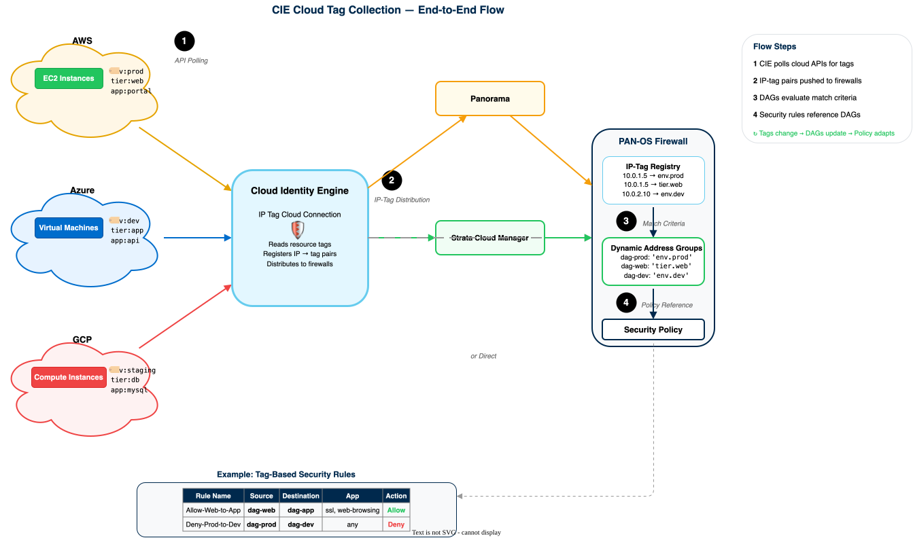

Cloud Tag Collection with CIE
End-to-end guide: cloud account configuration through verified tag-based security policy
This guide covers cloud tag collection using the Cloud Identity Engine (CIE) IP Tag Cloud Connection feature. CIE connects to AWS, Azure, and GCP APIs to read resource tags and register them as IP-tag mappings on your firewalls. These tags drive Dynamic Address Groups (DAGs) that automatically update security policy as cloud workloads scale, move, or change.
Prerequisite: CIE must be activated before starting this guide. If CIE is not yet set up, complete Phase 1 and Phase 2 of the CIE Implementation Guide first.
Management platforms: Tag collection configuration and DAG/policy creation are covered for Panorama, Strata Cloud Manager (SCM), and PAN-OS firewall (direct). Phase 2 uses cloud-specific tabs (AWS / Azure / GCP) for the provider setup steps.
This guide focuses exclusively on cloud tag collection and tag-based policy. For user/group identity (directory sync, authentication, User-ID, Cloud Dynamic User Groups), see the full Cloud Identity Engine Implementation Guide.
Architecture Overview
Before configuring anything, understand how the Cloud Identity Engine collects cloud resource tags, maps them to IP addresses, and drives security policy through Dynamic Address Groups. The sections below cover the collection mechanism, the end-to-end tag-to-policy flow, per-cloud tag support, the comparison with legacy VM Monitoring, and when this guide applies.
The IP Tag Cloud Connection feature in the Cloud Identity Engine connects to cloud provider APIs, reads resource tags attached to compute instances, and registers IP-to-tag mappings on connected firewalls. One credential configuration and one monitor configuration per cloud account are all that is needed.
The collection process has two parts:
- Credential Configuration -- provide CIE with authentication credentials for the cloud account (AWS access keys or Role ARN, Azure service principal, or GCP service account JSON key).
- Monitor Configuration -- select which regions, VPCs, or projects to monitor, set the polling interval (range:
60-1800seconds, default60), and assign a segment that determines which firewalls receive the IP-tag mappings.
Once configured, CIE polls the cloud provider API at the specified interval. It performs incremental syncs -- only new or modified mappings are transferred each cycle. A manual Full Sync option forces a complete re-read of all mappings.
Each monitor configuration can synchronize up to 60,000 IP-tag mappings per region from a single cloud service. CIE distributes these mappings to all firewalls assigned to the selected segment. Reference: Configure an IP Tag Cloud Connection.
The segment selected during monitor configuration creation cannot be changed after submission. To use a different segment, delete the existing monitor configuration and create a new one. Deleting a monitor configuration removes all IP-tag mappings from that configuration on every connected firewall.
Confirm understanding of the two-part configuration model (credential + monitor) and the incremental polling behavior before proceeding. The rest of this guide builds on these concepts.
The value of CIE tag collection is the automation chain it enables. When a cloud resource is tagged, that tag propagates automatically through CIE to become an enforceable policy object on the firewall -- no manual IP address management required.
The end-to-end flow works as follows:
- Cloud resource tag -- an EC2 instance, Azure VM, or GCP Compute Engine instance has a resource tag (e.g.,
env=prod). - CIE polls cloud API -- CIE reads the tag and the instance's private IP address, creating an IP-to-tag mapping (e.g.,
10.0.1.5mapped toenv.prod). - CIE distributes to firewalls -- CIE pushes the IP-tag mapping to all firewalls in the assigned segment.
- Firewall registers IP-tag pair -- the firewall stores the mapping in its registered-IP table (viewable via
show object registered-ip all). - DAG match criteria evaluates -- a Dynamic Address Group configured with match criteria
'env.prod'evaluates the registered tags and adds10.0.1.5as a member. - Security rule enforces -- a security policy rule referencing the DAG as source or destination address automatically applies to traffic from/to
10.0.1.5.
When the instance is terminated or its tag is removed, CIE detects the change on the next poll, deregisters the IP-tag mapping, the DAG membership updates, and the policy stops matching -- all without manual intervention.
End-to-end tag collection and policy flow:

The tag format used in DAG match criteria depends on the cloud provider and the tag type. Cloud tags use dot notation (e.g., azure.tag.env.prod), not colon notation. The exact format for each cloud is detailed in the Supported Tag Types per Cloud section below.
Confirm understanding of the six-step chain: cloud tag, CIE poll, firewall registration, DAG evaluation, policy match, automatic lifecycle. This flow is the foundation for every configuration step in this guide.
Each cloud provider exposes resource metadata differently. CIE normalizes these into IP-tag mappings, but the tag names and available attributes vary. The table below summarizes what CIE collects from each cloud.
| Attribute | AWS | Azure | GCP |
|---|---|---|---|
| Primary tag type | Resource tags (key-value pairs on EC2 instances) | Resource tags (key-value pairs on VMs, NICs, load balancers, subnets) | Labels (key-value pairs) and network tags (simple strings) on Compute Engine instances |
| Tag format example | aws.tag.env.prod |
azure.tag.env.prod |
gcp.label.env.prod |
| Predefined attributes | VPC ID, region, instance ID | VM name, OS type, region, resource group, VNET name, subnet name, NSG name, subscription ID (11 predefined) | Instance name, zone, project ID, network |
| User-defined tag limit | Up to 50 tags per resource (AWS platform limit) | Up to 21 user-defined tags per VM (alphabetically sorted, first 21 selected) | Up to 64 labels per resource (GCP platform limit) |
| Service tags | Not applicable | Azure Service Tags supported (azure.svc-tag.<service>), representing IP prefix groups for Azure services |
Not applicable |
| Authentication method | Access Key ID + Secret Access Key; optional Role ARN for cross-account access | Service principal (Client ID, Client Secret, Tenant ID, Subscription ID) | Service account JSON key file |
| Scope selection | Regions, VPCs | Regions (all or specific) | Regions, Project IDs |
Tags longer than 127 characters are not retrieved or registered on firewalls. Tags must not contain non-ASCII special characters such as { or ". Plan tag naming conventions accordingly before deploying.
Confirm that the cloud accounts to be monitored use resource tags or labels that fall within the supported formats and character limits. Identify the authentication method required for each cloud account.
Before CIE IP Tag Cloud Connection existed, the only way to collect cloud resource tags was VM Monitoring -- a per-firewall or per-Panorama-plugin approach where each device polled cloud APIs independently. CIE replaces this with a centralized, cloud-hosted model. The table below compares the two approaches.
| Capability | CIE IP Tag Cloud Connection | Legacy VM Monitoring |
|---|---|---|
| Architecture | Centralized cloud service (hub-and-spoke). One configuration distributes tags to all firewalls via segments. | Decentralized. Each firewall or Panorama instance polls cloud APIs independently. |
| Multi-cloud support | AWS, Azure, and GCP from a single interface. No per-cloud plugins required. | Separate Panorama plugin per cloud (Azure plugin, GCP plugin, AWS plugin). Each must be installed, configured, and maintained independently. |
| Configuration scope | Configure once in CIE; all firewalls in the segment receive tags automatically. | Configure on each firewall (Device > VM Information Sources) or per Panorama plugin with Monitoring Definitions and Notify Groups. |
| Scale (Azure example) | Up to 60,000 IP-tag mappings per region per monitor configuration. | Up to 8,000 IP-tag mappings per device group. Max 100 subscriptions (500 with plugin v3.2.0+); processing 500 subscriptions takes ~5 hours. |
| Panorama plugin required | No | Yes (per cloud) |
| Firewall-local config required | No (CIE pushes to firewalls via segment) | Yes (GCP: up to 10 VM information sources per firewall; AWS/Azure: Panorama plugin + Monitoring Definitions) |
| API call efficiency | One set of API calls from CIE, results shared to N firewalls. | Each firewall/Panorama instance makes its own API calls, multiplying cloud API usage. |
| Recommended for | All new deployments. PAN-OS 10.1+ required. | Legacy deployments on PAN-OS versions prior to 10.1, or environments where CIE activation is not possible. |
Existing VM Monitoring configurations can coexist with CIE IP Tag Cloud Connections. Both register IP-tag mappings into the same registered-IP table on the firewall. Plan a phased migration: stand up CIE connections, verify tag parity, then decommission VM Monitoring definitions and uninstall per-cloud Panorama plugins.
This guide applies when all of the following conditions are true:
- Cloud workloads exist in AWS, Azure, or GCP with meaningful resource tags or labels already applied (e.g.,
env,app-tier,team). - Tag-driven security policy is the goal -- security rules should automatically adapt as workloads scale, move, or change tags, without manual IP address updates.
- CIE is activated -- the Cloud Identity Engine service has been enabled and initial setup (activation, tenant onboarding) is complete. If not, complete Phase 1 and Phase 2 of the CIE Implementation Guide first.
- PAN-OS 10.1 or later runs on all firewalls that will receive IP-tag registrations from CIE.
CIE also provides directory sync, User-ID redistribution, authentication, and Cloud Dynamic User Groups. Those capabilities are covered in the Cloud Identity Engine Implementation Guide. This guide focuses exclusively on the IP Tag Cloud Connection feature for cloud resource tag collection and tag-based security policy.
Confirm that CIE is activated, firewalls run PAN-OS 10.1+, and cloud resources have tags applied. If all conditions are met, proceed to Phase 1: Prerequisites.
Phase 1: Prerequisites & Cloud Account Access
Complete these readiness checks before configuring tag collection in Phase 2. If CIE is not yet activated, complete Phases 1 and 2 of the CIE Implementation Guide first.
IP Tag Cloud Connection configuration requires an active CIE tenant. Confirm activation before proceeding.
- Open https://hub.paloaltonetworks.com and log in with Palo Alto Networks credentials.
- Navigate to
Cloud Identity Enginein the hub. - Confirm the CIE dashboard loads and the tenant status shows as active.
- Navigate to
User Context>IP-Tag Collection. Confirm the page loads withCredential ConfigurationandMonitor & Statustabs visible.
If the Cloud Identity Engine does not appear in the hub, or the dashboard fails to load, complete Phase 1 (Activate CIE) and Phase 2 (Configure Tenant) of the CIE Implementation Guide before returning to this guide. CIE activation is a one-time setup that provisions the tenant and creates the initial segment.
The CIE dashboard loads at hub.paloaltonetworks.com. The IP-Tag Collection page is accessible under User Context.
CIE IP-tag redistribution requires PAN-OS 10.1 or later on every firewall that will receive IP-tag mappings from CIE. Firewalls on older versions cannot subscribe to CIE segments.
| Component | Minimum Version | Notes |
|---|---|---|
| PAN-OS (firewalls) | 10.1 |
Required for CIE IP-tag redistribution via segments. Firewalls on PAN-OS 10.0 or earlier must use legacy VM Monitoring instead. |
| Panorama | 10.1 |
Required only if Panorama manages the firewalls. Panorama version must match or exceed the managed firewall PAN-OS version. |
| Strata Cloud Manager | N/A (cloud-hosted) | SCM is always current. No firewall-side PAN-OS version gate for SCM-managed configurations. |
| CIE service | N/A (cloud-hosted) | CIE is a cloud service with no customer-managed versioning. |
Check the PAN-OS version on each firewall:
show system info | match sw-versionCheck the Panorama version (if applicable):
show system info | match sw-versionIf some firewalls run PAN-OS 10.0 or earlier, those firewalls cannot receive IP-tag mappings from CIE. Use legacy VM Monitoring for those devices and plan a PAN-OS upgrade to consolidate on CIE.
Every firewall that will receive CIE IP-tag mappings reports PAN-OS 10.1 or later. If Panorama is in use, it reports version 10.1 or later.
CIE is a cloud-hosted service that connects outbound to cloud provider APIs and redistributes IP-tag mappings to firewalls. Two connectivity paths must be open.
Path 1: CIE to cloud provider APIs
CIE polls cloud provider APIs over HTTPS to read resource tags. The following endpoints must be reachable from the CIE service (these are outbound from Palo Alto Networks infrastructure, not from the customer network):
| Cloud | Endpoint | Port | Purpose |
|---|---|---|---|
| AWS | sts.amazonaws.com, sts.<region>.amazonaws.com |
443 |
STS AssumeRole for cross-account access |
| AWS | ec2.<region>.amazonaws.com |
443 |
EC2 DescribeInstances, DescribeTags |
| Azure | login.microsoftonline.com |
443 |
OAuth2 token acquisition for service principal |
| Azure | management.azure.com |
443 |
Azure Resource Manager API (read resource tags) |
| GCP | oauth2.googleapis.com |
443 |
Service account authentication |
| GCP | compute.googleapis.com |
443 |
Compute Engine API (read instance metadata, labels, network tags) |
CIE initiates API calls from Palo Alto Networks' cloud infrastructure, not from the customer's network. No inbound firewall rules are needed on the customer side for the CIE-to-cloud-API path. The cloud provider IAM credentials (Role ARN, service principal, service account key) handle authentication.
Path 2: Firewalls to CIE
Firewalls initiate outbound HTTPS connections to CIE to receive IP-tag redistribution. The management interface (or a dedicated service route) must have outbound access to CIE service endpoints on port 443.
The exact CIE service endpoints are tenant-specific and provisioned during CIE activation. Confirm outbound HTTPS (443) access from the firewall management interface to *.paloaltonetworks.com. For exact endpoint details, consult the network requirements documented in the CIE Implementation Guide.
Check the CIE service status page to confirm the service is operational:
- Open status.paloaltonetworks.com.
- Confirm the Cloud Identity Engine service shows a green status.
The CIE service status page shows green. Firewalls have outbound HTTPS access on port 443 from their management interface. No firewall or network ACL blocks outbound connectivity to *.paloaltonetworks.com.
Each cloud provider requires specific credentials for CIE to authenticate and read resource tags. This step is a planning checklist; the actual credential creation is covered in Phase 2.
Identify which cloud accounts will be onboarded and gather the following information for each:
| Cloud | Required Credentials | Required Permissions | Phase 2 Reference |
|---|---|---|---|
| AWS | IAM Role ARN with cross-account trust to the Palo Alto Networks CIE AWS account, plus an external ID (both displayed in the CIE console during credential setup) | EC2 read-only: ec2:DescribeInstances, ec2:DescribeTags, ec2:DescribeNetworkInterfaces, ec2:DescribeVpcs, ec2:DescribeVpcEndpoints, ec2:DescribeSubnets, ec2:DescribeRegions |
Steps 2A.1–2A.2 |
| Azure | App Registration (service principal) with Client ID, Client Secret, Tenant ID, and Subscription ID | Reader role on each target subscription |
Steps 2B.1–2B.3 |
| GCP | Service Account with a downloaded JSON key file | Compute Viewer (roles/compute.viewer) on each target project |
Steps 2C.1–2C.2 |
For environments spanning multiple cloud providers, prepare credentials for each provider independently. Each cloud account, subscription, or project requires its own credential configuration in CIE.
CIE provides CloudFormation Templates (CFTs) that automate IAM role and policy creation for AWS. The CFT is accessible from the CIE console during credential configuration (Open CFT (Application Account Prerequisites)). If using CFTs, the manual IAM policy and role creation steps in Phase 2A can be skipped.
Record the information below for each cloud account to onboard. These values are needed in Phase 2.
| Item | Your Value |
|---|---|
| Cloud provider (AWS / Azure / GCP) | (record) |
| Account ID / Subscription ID / Project ID | (record) |
| Regions to monitor | (record) |
| CIE segment name (from CIE activation) | (record) |
| IAM administrator access to the cloud account | (confirm) |
Each cloud account to onboard has been identified. The cloud provider, account/subscription/project ID, target regions, and CIE segment name are recorded. IAM administrator access to each cloud account is confirmed.
CIE collects all resource tags from monitored cloud accounts, but only tags referenced in Dynamic Address Group (DAG) match criteria drive security policy. Identify the tag keys and values that will form the basis of tag-based policy before configuring collection.
Common tag patterns for security policy
| Tag Key | Example Values | Policy Use Case |
|---|---|---|
env |
prod, staging, dev |
Segment traffic by environment. Restrict dev workloads from reaching production databases. |
tier or app-tier |
web, app, db |
Enforce tiered access: web tier accepts inbound HTTPS, only app tier reaches the database tier. |
app |
payments, inventory, auth |
Application-specific rules. Allow the payments app to reach the PCI-scoped database but deny other apps. |
owner or team |
platform-eng, data-science |
Team-based access control. Grant visibility into team-owned resources. |
compliance |
pci, hipaa, sox |
Compliance-scoped policy. Apply stricter logging and inspection to PCI-tagged workloads. |
Tag naming recommendations
- Standardize tag keys across clouds. Use the same key name (e.g.,
env) in AWS, Azure, and GCP. The cloud prefix (aws.tag.,azure.tag.,gcp.label.) differentiates them in DAG match criteria, but consistent key names simplify policy design. - Use lowercase tag keys and values. Tag names in DAG match criteria are case-sensitive. Mixing cases (e.g.,
Envvsenv) creates match failures. - Keep tag values short and predictable. Tags longer than 127 characters are not retrieved by CIE. Avoid special characters (
{,", non-ASCII). - Avoid spaces in tag keys. Spaces in tag keys create unexpected tokens in the CIE tag format, which complicates match criteria.
CIE reads tags that are already applied to cloud resources. It does not create or modify tags. If the target workloads are not yet tagged, apply tags in the cloud provider console or via IaC (Terraform, CloudFormation, ARM templates) before proceeding to Phase 2.
CIE collects up to 21 user-defined tags per Azure resource, selected alphabetically. If a resource has more than 21 tags, only the first 21 (sorted alphabetically by key name) are collected. Plan tag key naming accordingly if operating near this limit.
A list of tag keys and values that will drive security policy has been identified. Tag naming conventions (lowercase, no spaces, under 127 characters) are confirmed. Cloud resources in the target accounts have the intended tags applied. Phase 1 is complete; proceed to Phase 2: Enable Tag Collection.
Phase 2: Enable Tag Collection
CIE uses an IP Tag Cloud Connection to read resource tags from each cloud provider via API polling. Each cloud account, subscription, or project gets its own connection. The connection consists of two objects:
- Credential Configuration — authenticates CIE to the cloud provider (IAM role, service principal, or service account key).
- Monitor Configuration — defines what to collect (regions, VPCs, projects) and where to send it (segment). The monitor configuration also sets the polling interval.
CIE syncs only new or modified mappings on each poll cycle. Per region, a single monitor configuration supports up to 60,000 IP-tag mappings.
Reference: Configure an IP Tag Cloud Connection
For environments spanning multiple cloud providers, create separate credential and monitor configurations for each provider. Complete the steps in the relevant cloud tab below for each account, then proceed to the common steps at the end of this phase.
Confirm access to the CIE console by navigating to User Context > IP-Tag Collection. The page loads with Credential Configuration and Monitor & Status tabs visible.
The cloud provider setup differs for each provider. Select the tab matching the cloud account to onboard. The selection persists across the page.
- AWS — uses IAM roles with cross-account trust. CIE assumes a role in the customer account to read EC2 tags.
- Azure — uses an App Registration (service principal) with a client secret. CIE reads resource tags via the Azure Resource Manager API.
- GCP — uses a service account with a downloaded JSON key. CIE reads instance metadata, labels, and network tags via the Compute Engine API.
CIE needs read-only access to EC2 instance metadata, tags, and VPC information. Create a custom IAM policy with the minimum required permissions.
- Open the AWS IAM Console.
- Navigate to
Policies>Create policy. - Select the
JSONtab and paste the following policy:
{
"Version": "2012-10-17",
"Statement": [
{
"Effect": "Allow",
"Action": [
"ec2:DescribeInstances",
"ec2:DescribeTags",
"ec2:DescribeNetworkInterfaces",
"ec2:DescribeVpcs",
"ec2:DescribeVpcEndpoints",
"ec2:DescribeSubnets",
"ec2:DescribeRegions"
],
"Resource": "*"
}
]
}- Click
Next. - Set Policy name to
CIE-IPTag-ReadOnly. - Click
Create policy.
Resource: "*"?EC2 Describe* actions do not support resource-level restrictions. The wildcard resource is the minimum scope that AWS allows for these read-only actions.
The policy CIE-IPTag-ReadOnly appears under IAM > Policies with status Active.
CIE authenticates to AWS using IAM user access keys that you provide. For cross-account tag collection, this IAM user lives in a source account (sometimes called a security account or hub account) and assumes a role in each target account (the accounts containing the EC2 workloads). Create this user in whatever account you use to centralize CIE credentials.
Source account: holds the IAM user whose access keys are entered in CIE. The user has only sts:AssumeRole permission — no direct EC2 access.
Target account(s): hold the EC2 workloads. Each target account has the CIE-IPTag-AssumeRole role (created in Step 2A.2) with EC2 read permissions and a trust policy that allows the source account user to assume it.
CIE uses the source account access keys to call sts:AssumeRole into each target account, then reads EC2 tags with the resulting temporary credentials.
If the EC2 workloads are in the same account as the IAM user, skip Step 2A.2 entirely. Attach the CIE-IPTag-ReadOnly policy directly to the IAM user, and enter the user's access keys in Step 2A.3 with no Role ARN.
- Open the AWS IAM Console in the source account (the account where CIE credentials will be managed).
- Navigate to
Users>Create user. - Set User name to
cie-iptag-collector. - Click
Next. - Select Attach policies directly.
- Click
Create policy(opens a new tab), select theJSONtab, and paste the following. This grants the user permission to assume the tag-collection role in target accounts.
{
"Version": "2012-10-17",
"Statement": [
{
"Effect": "Allow",
"Action": "sts:AssumeRole",
"Resource": "arn:aws:iam::*:role/CIE-IPTag-AssumeRole"
}
]
}Replace * with each target account ID to limit which accounts can be assumed into (e.g., arn:aws:iam::111122223333:role/CIE-IPTag-AssumeRole). Using * is broader than necessary if you have a known set of target accounts.
- Set Policy name to
CIE-IPTag-AssumeRole-Policyand clickCreate policy. - Return to the user creation tab, refresh the policy list, and attach
CIE-IPTag-AssumeRole-Policy. - Click
Next, review, then clickCreate user. - Open the newly created user and select the
Security credentialstab. - Under Access keys, click
Create access key. - Select Third-party service as the use case and click
Next, thenCreate access key. - Copy and securely store the Access key ID and Secret access key. These values are entered in Step 2A.3.
AWS displays the secret access key only once at creation time. If you navigate away before copying it, the value is gone permanently and you must create a new key.
The IAM user cie-iptag-collector appears under IAM > Users. The Security credentials tab shows one active access key. The access key ID and secret access key are recorded securely.
Create an IAM role in the target account (the account with the EC2 workloads). This role grants EC2 read permissions and trusts the source account IAM user (created in Step 2A.1b) to assume it. Run this step once per target account.
CIE provides two CloudFormation Templates (CFTs) that automate both the IAM user and IAM role setup:
- Application Account CFT — run in each target account (the accounts with EC2 workloads). Creates the IAM role, trust policy, and read-only EC2 permissions. In the CIE console under
IP-Tag Collection>Credential Configuration, selectAWSand clickOpen CFT (Application Account Prerequisites). - Security Account CFT — run in the source account (the account where you manage CIE credentials). Creates the IAM user and attaches an
sts:AssumeRolepolicy for the target account roles. ClickOpen CFT (Security Account Prerequisites).
If using CFTs for both accounts, skip Steps 2A.1, 2A.1b, and 2A.2 and proceed directly to Step 2A.3 to register the credentials in CIE.
- Open the AWS IAM Console in the target account (the account containing the EC2 workloads).
- Navigate to
Roles>Create role. - Select Trusted entity type:
Another AWS account. - Enter the Account ID of the source account (the account where the
cie-iptag-collectorIAM user was created in Step 2A.1b).Important: Enter the source account ID, not a PAN account IDThe Account ID entered here is your own source account (where the
cie-iptag-collectorIAM user lives), not an account provided by Palo Alto Networks. This trust relationship is between two accounts you control. - Leave
Require external IDunchecked for customer-controlled cross-account setups. ClickNext. - Search for and attach the
CIE-IPTag-ReadOnlypolicy created in Step 2A.1. - Click
Next. - Set Role name to
CIE-IPTag-AssumeRole. - Click
Create role. - Open the newly created role and copy the Role ARN (format:
arn:aws:iam::<target-account-id>:role/CIE-IPTag-AssumeRole). This ARN is needed in Step 2A.3.
If provisioning the IAM role via Terraform, CloudFormation, or another IaC tool, use this trust policy. Replace <SOURCE-ACCOUNT-ID> with the account ID of your source account (where cie-iptag-collector lives). Replace <IAM-USER-NAME> with cie-iptag-collector or omit :user/<IAM-USER-NAME> and use :root to trust all principals in that account.
{
"Version": "2012-10-17",
"Statement": [
{
"Effect": "Allow",
"Principal": {
"AWS": "arn:aws:iam::<SOURCE-ACCOUNT-ID>:user/<IAM-USER-NAME>"
},
"Action": "sts:AssumeRole"
}
]
}If collecting tags from multiple AWS accounts, create the CIE-IPTag-AssumeRole role in each target account, with the trust policy pointing to the same source account. Add each role's ARN to the CIE credential configuration in Step 2A.3.
The role CIE-IPTag-AssumeRole appears under IAM > Roles in the target account. The Trust relationships tab shows your source account ID as the trusted principal. The Permissions tab shows the CIE-IPTag-ReadOnly policy attached.
Register the AWS credentials in CIE so it can authenticate to the customer account.
- In the CIE console, navigate to
User Context>IP-Tag Collection. - Select the
Credential Configurationtab. - Click
Set Up a New Credential Configurationand selectAWS. - Enter a descriptive Name (e.g.,
aws-prod-account-tags). - Enter the Access Key ID and Secret Access Key for the
cie-iptag-collectorIAM user created in Step 2A.1b. These credentials identify the source account that CIE will use to callsts:AssumeRole. - Click
Add Role ARN. Enter:Field Value Role ARN Name A descriptive label (e.g., prod-account)Role ARN Value The ARN copied from Step 2A.2 (e.g., arn:aws:iam::123456789012:role/CIE-IPTag-AssumeRole) - Click
Test Connection. - Click
Submit.
CIE allows saving the configuration even if Test Connection fails. The status will show Not connected until the underlying IAM issue is resolved. Do not proceed to the monitor configuration until the credential test passes.
Test Connection returns a success message. The credential configuration appears in the list with the name entered.
The monitor configuration defines which regions and VPCs to poll, how frequently to sync, and which CIE segment receives the tag mappings.
- Select the
Monitor & Statustab. - Click
Set Up a New Monitor Configurationand select the AWS credential configuration created in Step 2A.3. - Enter a descriptive Name (e.g.,
aws-prod-us-west-tags). - Select the Credential Configuration from the dropdown.
- (Optional) Select a Role ARN if multiple roles are configured.
- Configure region and VPC scope:
| Field | Recommended Value | Notes |
|---|---|---|
| All Regions | Deselected | Select only regions with active workloads to reduce polling latency. |
| Regions | Select specific regions (e.g., us-west-2, us-east-1) | Wait for the region list to populate after deselecting All Regions. |
| All VPCs | Selected (default) | Deselect to scope to specific VPCs. Regions must be selected first. |
| Polling Interval | 300 seconds | Range: 60–1800 seconds. Default: 60. A 5-minute interval balances freshness with API call volume. |
| Segment | Select the target segment | Choose the segment configured during CIE activation. Select None for monitoring-only (no redistribution to firewalls). |
- Click
Submit.
Once a monitor configuration is submitted, the segment assignment is locked. To change the segment, delete the monitor configuration and create a new one.
The monitor configuration appears on the Monitor & Status tab. The Status column shows Connected or Connection pending (initial sync in progress). Click the configuration name to view connection details and confirm the selected regions.
Confirm that CIE has pulled IP-tag mappings from the AWS account.
- On the
Monitor & Statustab, click the monitor configuration name to open the detail view. - Review the Connection Details — status should show
Connected. - Select the
VPCtab. Confirm VPC IDs appear with non-zero IPs counts. - Select the
Tag To IPtab. Search for a known tag (e.g.,env:prod) and confirm matching IPs appear. - Select the
IP To Tagtab. Search for a known instance IP and confirm its tags are listed.
The first sync after creating a monitor configuration may take several minutes, depending on the number of regions and instances. If the status shows Connection pending, wait for one full polling interval and refresh the page.
The monitor configuration status is Connected. The Tag To IP tab returns results for known AWS resource tags. The Sync Status shows a recent timestamp.
CIE authenticates to Azure using a service principal. Create an App Registration in Microsoft Entra ID (formerly Azure Active Directory) to generate the required credentials.
- Open the Azure Portal > Microsoft Entra ID > App registrations.
- Click
New registration. - Set Name to
CIE-IPTag-Reader. - Leave Supported account types at the default (
Accounts in this organizational directory only). - Leave Redirect URI blank.
- Click
Register. - On the app's Overview page, copy and save:
Field Where to find it Application (client) ID Overview page, top section Directory (tenant) ID Overview page, top section
Reference: Azure: Get tenant and app ID values
The app registration CIE-IPTag-Reader appears under App registrations. The Application ID and Tenant ID are recorded.
Grant the service principal read-only access to the subscription(s) containing the resources whose tags CIE should collect.
- Navigate to the target Subscription in the Azure Portal.
- Click
Access control (IAM)>Add>Add role assignment. - Search for and select the
Readerrole. - Click
Next. - Under Assign access to, select
User, group, or service principal. - Click
Select members, search forCIE-IPTag-Reader, and select it. - Click
Review + assign.
Repeat this role assignment on every subscription that contains resources whose tags should be collected. Each subscription requires its own Reader role assignment for the same service principal.
Under the subscription's Access control (IAM) > Role assignments, the CIE-IPTag-Reader service principal appears with the Reader role.
Generate a client secret for the service principal. CIE uses this secret to authenticate API requests.
- In the Azure Portal, navigate to
Microsoft Entra ID>App registrations>CIE-IPTag-Reader. - Click
Certificates & secretsin the left menu. - Under Client secrets, click
New client secret. - Enter a Description (e.g.,
CIE tag collection). - Select an Expiration period. A 12-month or 24-month expiry is common.
- Click
Add. - Copy the Value column immediately. This is the client secret — it is displayed only once.
Azure displays the client secret value only at creation time. After navigating away from this page, the value is permanently hidden. If lost, delete the secret and create a new one.
Set a calendar reminder to rotate the client secret before it expires. When the secret expires, CIE loses the ability to poll Azure for tags, and the connection status changes to Not connected.
The new client secret appears under Certificates & secrets with the selected expiration date. The secret Value has been copied and stored securely.
Register the Azure service principal credentials in CIE.
- In the CIE console, navigate to
User Context>IP-Tag Collection. - Select the
Credential Configurationtab. - Click
Set Up a New Credential Configurationand selectAzure. - Enter a descriptive Name (e.g.,
azure-prod-subscription-tags). - Enter the credentials collected in Steps 2B.1 and 2B.3:
| Field | Source |
|---|---|
| Client ID | Application (client) ID from the App Registration overview |
| Client Secret | Secret value copied in Step 2B.3 |
| Tenant ID | Directory (tenant) ID from the App Registration overview |
| Subscription ID | The subscription ID from the Azure Portal (Subscriptions blade) |
- Click
Test Connection. - Click
Submit.
Reference: Azure: Get subscription and tenant ID
Test Connection returns a success message. The Azure credential configuration appears in the list.
Define the monitoring scope, polling interval, and optional Azure Service Tag collection.
- Select the
Monitor & Statustab. - Click
Set Up a New Monitor Configurationand select the Azure credential configuration created in Step 2B.4. - Enter a descriptive Name (e.g.,
azure-prod-westus2-tags). - Select the Credential Configuration from the dropdown.
- Configure collection scope and options:
| Field | Recommended Value | Notes |
|---|---|---|
| All Regions | Deselected | Select only regions with active workloads. |
| Regions | Select specific regions (e.g., westus2, eastus) | Wait for the list to populate after deselecting All Regions. |
| Fetch Service Tags | Optional | Azure Service Tags represent IP prefix groups for Azure services (e.g., Storage, SQL). Enable if security policy references Azure service endpoints. |
| Polling Interval | 300 seconds | Range: 60–1800 seconds. |
| Segment | Select the target segment | Cannot be changed after submission. |
- Click
Submit.
CIE collects both Azure resource metadata (VM name, size, OS, subnet, VNET, region, resource group) and user-defined tags. User-defined tags appear in the format azure.tag.<key>.<value>. Resource attributes use the format azure.<attribute> (e.g., azure.vnet_name, azure.region). Up to 21 user-defined tags per VM are collected (alphabetically sorted; the first 21 are selected if a resource has more).
The monitor configuration appears on the Monitor & Status tab with status Connected or Connection pending.
Confirm that CIE has pulled IP-tag mappings from the Azure subscription.
- On the
Monitor & Statustab, click the monitor configuration name to open the detail view. - Review the Connection Details — status should show
Connected. - Select the
Tag To IPtab. Search for a known tag (e.g., an Azure resource tag likeazure.tag.env.prod) and confirm matching IPs appear. - Select the
IP To Tagtab. Search for a known VM IP address and confirm its tags are listed.
The monitor configuration status is Connected. The Tag To IP tab returns results for known Azure resource tags. The Sync Status shows a recent timestamp.
CIE authenticates to GCP using a service account. Create a service account with the minimum permissions needed to read instance metadata and tags.
- Open the Google Cloud Console > IAM & Admin > Service Accounts.
- Select the target project.
- Click
Create Service Account. - Set Service account name to
cie-iptag-reader. - Click
Create and Continue. - Under Grant this service account access to project, add the role
Compute Viewer(roles/compute.viewer). - Click
Continue, thenDone.
To collect tags from multiple GCP projects, either create a service account in each project, or create one service account and grant it the Compute Viewer role in each target project via IAM. For Shared VPC environments, create service accounts in the host project and grant permissions to service projects.
The service account cie-iptag-reader appears under IAM & Admin > Service Accounts for the selected project. The Compute Viewer role is listed under the project's IAM bindings.
Generate a JSON key file for the service account. CIE uses this file to authenticate API requests.
- In the Google Cloud Console, navigate to
IAM & Admin>Service Accounts. - Click the
cie-iptag-readerservice account. - Select the
Keystab. - Click
Add Key>Create new key. - Select
JSONas the key type. - Click
Create. The JSON key file downloads automatically. - Store the downloaded JSON file securely. It is needed in Step 2C.3.
The JSON key file contains a private key that grants API access to the GCP project. Store it in a secrets manager or encrypted vault. Do not commit it to version control or share it via unencrypted channels.
A service account key can only be used for a single CIE credential configuration. Do not reuse the same JSON key file across multiple configurations.
The key appears under the service account's Keys tab with the creation date. The downloaded JSON file contains the fields type, project_id, private_key_id, and client_email.
Register the GCP service account credentials in CIE by uploading the JSON key file.
- In the CIE console, navigate to
User Context>IP-Tag Collection. - Select the
Credential Configurationtab. - Click
Set Up a New Credential Configurationand selectGoogle Cloud Platform. - Enter a descriptive Name (e.g.,
gcp-prod-project-tags). - Click
Browse filesand select the JSON key file downloaded in Step 2C.2, or drag and drop it into the upload area. - (Optional) Select a Region for the CIE instance. If no region is selected, CIE defaults to
us-west-2. Select a region that enables API requests from CIE. - Click
Test Connection. - Click
Submit.
Test Connection returns a success message. The GCP credential configuration appears in the list.
Define the monitoring scope, polling interval, and project filtering for GCP tag collection.
- Select the
Monitor & Statustab. - Click
Set Up a New Monitor Configurationand select the GCP credential configuration created in Step 2C.3. - Enter a descriptive Name (e.g.,
gcp-prod-us-tags). - Select the Credential Configuration from the dropdown.
- Configure collection scope:
| Field | Recommended Value | Notes |
|---|---|---|
| All Regions | Deselected | Select only regions with active workloads. |
| Regions | Select specific regions (e.g., us-west1, us-central1) | Wait for the list to populate. |
| All Project IDs | Selected (default) or select specific projects | Deselect to scope to specific GCP projects. |
| Polling Interval | 300 seconds | Range: 60–1800 seconds. |
| Segment | Select the target segment | Cannot be changed after submission. |
- Click
Submit.
GCP has two distinct tagging mechanisms. Labels are key:value metadata pairs on resources (similar to AWS tags and Azure tags). Network tags are simple string identifiers on VM instances used to control firewall rules and routing. CIE collects both types. When creating DAG match criteria in Phase 3, distinguish between labels (format: gcp.label.<key>.<value>) and network tags (format: gcp.tag.<value>).
The monitor configuration appears on the Monitor & Status tab with status Connected or Connection pending.
Confirm that CIE has pulled IP-tag mappings from the GCP project.
- On the
Monitor & Statustab, click the monitor configuration name to open the detail view. - Review the Connection Details — status should show
Connected. - Select the
Tag To IPtab. Search for a known GCP label or network tag and confirm matching IPs appear. - Select the
IP To Tagtab. Search for a known VM IP and confirm its labels and network tags are listed.
The monitor configuration status is Connected. The Tag To IP tab returns results for known GCP labels and network tags. The Sync Status shows a recent timestamp.
The polling interval set during monitor configuration creation determines how frequently CIE checks for new or modified tags. Adjust it based on the rate of change in the environment.
| Environment Type | Recommended Interval | Rationale |
|---|---|---|
| Auto-scaling / ephemeral workloads | 60–120 seconds | Instances scale frequently; tags must update quickly to keep DAG membership accurate. |
| Standard production | 300 seconds (5 minutes) | Balances freshness with API call volume. Suitable for most environments. |
| Stable / infrequently changing | 900–1800 seconds | Reduces unnecessary API polling for environments with static workloads. |
To change the polling interval on an existing monitor configuration:
- Navigate to
User Context>IP-Tag Collection>Monitor & Statustab. - Click
Editon the target monitor configuration. - Update the Polling Interval value.
- Click
Submit.
To force an immediate re-sync outside the polling interval (e.g., after tagging a batch of new resources), click Full Sync under the monitor configuration's Actions menu. This pulls all current IP-tag mappings, not just deltas.
The updated polling interval appears in the monitor configuration details. After one interval elapses, the Sync Status timestamp updates to confirm the new cadence.
Confirm that all configured cloud connections are syncing and that tag data is visible in the centralized CIE dashboard.
- Navigate to
User Context>Mappings and Tags. - Select
IP Tags. - Search by Tag to confirm tags from each configured cloud provider appear (e.g., search for
envto find environment tags across providers). - Search by IP address for a known cloud workload IP and confirm the associated tags are listed.
- (Optional) Filter by Segment to confirm mappings are landing in the intended segment for redistribution to firewalls.
Reference: View Data Collected by Cloud Identity Engine
The IP Tags page shows IP-tag mappings from each cloud provider connection configured in this phase. Tags are searchable by tag name and by IP address. Phase 2 is complete; proceed to Phase 3: Configure Dynamic Address Groups.
Phase 3: Configure Dynamic Address Groups
Dynamic Address Groups (DAGs) are the bridge between CIE tag collection and security policy. A DAG uses match criteria (tag-based filter expressions) to dynamically populate its membership from the firewall's registered-IP table. When CIE registers an IP-tag mapping, any DAG whose match criteria includes that tag automatically adds the IP as a member. No commit is needed for membership changes, only for creating or modifying the DAG definition itself.
Reference: Use Dynamic Address Groups in Policy
DAG match criteria determine which registered IP-tag mappings populate the group. Before creating DAGs, understand the tag format and the operators available.
Tag format from CIE
Tags registered by CIE IP Tag Cloud Connections use cloud-provider-prefixed dot notation. The format is <provider>.tag.<key>.<value> (or <provider>.label.<key>.<value> for GCP labels):
| Cloud | Tag Type | Format | Example |
|---|---|---|---|
| AWS | Resource tag | aws.tag.<key>.<value> | aws.tag.env.prod |
| Azure | Resource tag | azure.tag.<key>.<value> | azure.tag.env.prod |
| Azure | Service tag | azure.svc-tag.<service> | azure.svc-tag.Storage |
| Azure | Predefined attribute | azure.<attribute>.<value> | azure.vmname.webserver-01 |
| GCP | Label | gcp.label.<key>.<value> | gcp.label.env.prod |
Match criteria must use the full cloud-prefixed tag name. Writing 'env.prod' instead of 'aws.tag.env.prod' produces no matches because no registered tag has that exact name. Verify the exact tag names in the registered-IP table (show object registered-ip all) before writing match criteria.
Boolean operators
Match criteria support two operators:
and— the IP must have all specified tags. Example:'aws.tag.env.prod' and 'aws.tag.tier.web'matches IPs tagged with bothenv=prodANDtier=web.or— the IP must have at least one of the specified tags. Example:'aws.tag.env.prod' or 'aws.tag.env.staging'matches IPs tagged with either environment.
PAN-OS does not support a not operator in DAG match criteria. To exclude a subset of tagged instances, create a separate DAG for the subset to exclude, and reference both DAGs in separate security policy rules with appropriate ordering. Reference: PAN-OS Admin Guide: Dynamic Address Groups.
Operator precedence
The and operator binds more tightly than or. In the expression 'aws.tag.env.prod' and 'aws.tag.tier.web' or 'aws.tag.tier.app', the effective evaluation is ('aws.tag.env.prod' AND 'aws.tag.tier.web') OR 'aws.tag.tier.app'. Use explicit grouping when the intent differs from this default precedence.
Additional rules
- Tag names in match criteria are case-sensitive.
- Each tag string must be enclosed in single quotes in the match criteria expression.
- A single IP address can carry up to 32 tags.
- Tags longer than 127 characters are not registered by CIE.
Confirm understanding of the cloud-prefixed tag format, the and/or operators, and the absence of negation. Verify the exact tag names available on the firewall by running show object registered-ip all on the CLI before proceeding to create DAGs.
DAG creation differs slightly across management platforms. Select the platform tab below. Steps 3.2 through 3.4 walk through three practical DAG patterns: environment segmentation, application tier segmentation, and boolean logic combinations.
- Panorama — centralized management. DAGs are created at the device group level and pushed to managed firewalls.
- SCM — Strata Cloud Manager. DAGs are created at a folder level and pushed via configuration management.
- Firewall — direct Web UI access. DAGs are created locally on the firewall.
Environment segmentation groups all instances sharing the same environment tag (e.g., production, staging, development) into a single DAG. This enables security policy rules that apply uniformly to an entire environment regardless of which instances are currently running.
- Select the target Device Group from the device group dropdown at the top of the Panorama UI.
- Navigate to
Objects>Address Groups. - Click
Add. - Set Name to
dag-prod. - Set Type to
Dynamic. - Click
Add Match Criteria. - Select the
Andoperator (default). - Locate and select the tag
aws.tag.env.prodfrom the tag list (or the equivalent tag for the target cloud, e.g.,azure.tag.env.prod).Tag list populationThe tag list displays tags from the registered-IP table of managed firewalls. If the expected tags do not appear, verify that CIE has completed at least one sync cycle and that the firewalls are in the correct CIE segment. Check
User Context>Mappings and Tags>IP Tagsin the CIE console. - Click
OKto save the match criteria. - Click
OKto save the address group.
Repeat for additional environments as needed:
| DAG Name | Match Criteria | Purpose |
|---|---|---|
dag-prod | 'aws.tag.env.prod' | All production instances |
dag-staging | 'aws.tag.env.staging' | All staging instances |
dag-dev | 'aws.tag.env.dev' | All development instances |
For multi-cloud environments, combine cloud-specific tags with the or operator: 'aws.tag.env.prod' or 'azure.tag.env.prod' or 'gcp.label.env.prod'. This creates a single DAG spanning all three clouds, assuming consistent tag key naming (env) across providers.
The DAG dag-prod appears under Objects > Address Groups with Type Dynamic. Click the More... link in the Addresses column to confirm IP addresses from production-tagged instances are listed as members.
Application tier DAGs enable micro-segmentation between web, application, and database tiers. By placing each tier in its own DAG, security policy can enforce strict inter-tier traffic controls, allowing web-to-app communication while blocking direct web-to-database access.
- Navigate to
Objects>Address Groupsin the target device group. - Click
Add. - Set Name to
dag-web-tier. - Set Type to
Dynamic. - Click
Add Match Criteria, select theAndoperator, and choose the tagaws.tag.tier.web. - Click
OKtwice to save.
Repeat for each application tier:
| DAG Name | Match Criteria | Purpose |
|---|---|---|
dag-web-tier | 'aws.tag.tier.web' | Web servers (front-end) |
dag-app-tier | 'aws.tag.tier.app' | Application servers (middle tier) |
dag-db-tier | 'aws.tag.tier.db' | Database servers (back-end) |
These DAGs serve as building blocks for inter-tier policy in Phase 4. A common pattern: allow dag-web-tier → dag-app-tier on HTTPS, allow dag-app-tier → dag-db-tier on database ports, deny all other inter-tier traffic. This enforces the principle of least privilege without hard-coding IP addresses.
Three DAGs (dag-web-tier, dag-app-tier, dag-db-tier) appear under Objects > Address Groups. Each shows Type Dynamic. Click More... in the Addresses column for each to confirm the expected IPs are populated.
Combining tags with boolean operators creates targeted DAGs that match only instances meeting multiple criteria. This is essential for environments where a single tag is too broad.
Example: Production web servers only
- Navigate to
Objects>Address Groupsin the target device group. - Click
Add. - Set Name to
dag-prod-web. - Set Type to
Dynamic. - Click
Add Match Criteria. - Select the
Andoperator. - Select
aws.tag.env.prod. - Select
aws.tag.tier.web. - Click
OKtwice to save.
The resulting match criteria is 'aws.tag.env.prod' and 'aws.tag.tier.web'. Only IPs tagged with both env=prod and tier=web become members.
Example: All non-production environments
- Click
Add. - Set Name to
dag-nonprod. - Set Type to
Dynamic. - Click
Add Match Criteria. - Select the
Oroperator. - Select
aws.tag.env.dev. - Select
aws.tag.env.staging. - Select
aws.tag.env.qa. - Click
OKtwice to save.
The resulting match criteria is 'aws.tag.env.dev' or 'aws.tag.env.staging' or 'aws.tag.env.qa'. Any IP tagged with at least one of these environment values becomes a member.
When mixing and and or in a single expression, and binds more tightly. The expression 'aws.tag.env.prod' and 'aws.tag.tier.web' or 'aws.tag.tier.app' evaluates as ('aws.tag.env.prod' AND 'aws.tag.tier.web') OR 'aws.tag.tier.app', meaning all app-tier instances match, not just production ones. If the intent is production web OR production app, create two separate DAGs and reference both in the security rule, or structure the match criteria carefully.
After creating all DAGs, commit and push:
- Click
Commit>Commit to Panoramaand confirm. - Click
Commit>Push to Devices, select the target device group, and push.
The DAG dag-prod-web appears with match criteria 'aws.tag.env.prod' and 'aws.tag.tier.web'. Click More... in the Addresses column to confirm only IPs with both tags are listed. The push to devices completes without errors.
After committing and pushing DAG definitions, verify that each DAG is populated with the expected IP addresses on the managed firewalls.
Verify via Panorama UI
- Navigate to
Objects>Address Groupsin the target device group. - Locate the DAG (e.g.,
dag-prod) in the list. - Click the
More...link in the Addresses column. - Review the list of IP addresses. Each entry shows the IP address and whether it is Dynamic (registered via CIE/API) or Static.
Verify via CLI on a managed firewall
SSH into a managed firewall and run the following commands:
> show object dynamic-address-group allThis displays all DAGs, their match criteria, and member count. To inspect a specific DAG:
> show object dynamic-address-group name dag-prodTo view all registered IP-tag mappings (confirming CIE tags are present):
> show object registered-ip allTo filter registered IPs by a specific tag:
> show object registered-ip tag aws.tag.env.prodEach firewall model has a maximum number of registered IP addresses (not per-DAG, but platform-wide). VM-Series ranges from 1,000 (VM-50) to 500,000 (M-Series/Panorama VA). If the registered-IP count approaches the platform limit, DAG membership may be incomplete. Check the current count against the limit for the firewall model. Reference: PAN-OS Dynamic Address Groups.
If a DAG shows zero members despite tags existing in the CIE console:
- Confirm the CIE monitor configuration is assigned to a segment (not
None) and that the firewall is in that segment. - Confirm the firewall has User Context Cloud Service enabled (
Device>Setup>Management>PAN-OS Edge Service Settings). - Confirm the match criteria uses the exact cloud-prefixed tag name (e.g.,
'aws.tag.env.prod', not'env.prod'). - Run
show object registered-ip allto confirm tags are in the registered-IP table.
The show object dynamic-address-group name dag-prod command returns the DAG with a member count matching the number of production-tagged cloud instances. The show object registered-ip tag aws.tag.env.prod command lists the same IPs. Phase 3 is complete; proceed to Phase 4: Build Tag-Based Security Policy.
Environment segmentation groups all instances sharing the same environment tag into a single DAG. In Strata Cloud Manager, DAGs are created at the folder level and pushed to managed firewalls.
- Navigate to
Manage>Configuration>NGFW and Prisma Access>Objects>Address Groups. - Select the target Folder from the folder dropdown (e.g., the folder containing the firewalls that receive CIE tags).
- Click
Add. - Set Name to
dag-prod. - Set Type to
Dynamic. - Click
Add Match Criteria. - Select the
Tags from CIEtab to view tags registered by CIE IP Tag Cloud Connections.Tags from CIE tabSCM provides a dedicated
Tags from CIEtab in the match criteria selector. This tab displays only tags collected via CIE IP Tag Cloud Connections, making it easier to find the correct cloud-prefixed tag names. If the tab is empty, verify that CIE has completed at least one sync cycle and that the monitor configuration is connected. - Select the tag
aws.tag.env.prod(or the equivalent tag for the target cloud). - Click
OKto save the match criteria. - Click
Saveto save the address group.
Repeat for additional environments as needed:
| DAG Name | Match Criteria | Purpose |
|---|---|---|
dag-prod | 'aws.tag.env.prod' | All production instances |
dag-staging | 'aws.tag.env.staging' | All staging instances |
dag-dev | 'aws.tag.env.dev' | All development instances |
For multi-cloud environments, combine cloud-specific tags with the or operator: 'aws.tag.env.prod' or 'azure.tag.env.prod' or 'gcp.label.env.prod'. This creates a single DAG spanning all three clouds, assuming consistent tag key naming across providers.
The DAG dag-prod appears under Objects > Address Groups with Type Dynamic. The match criteria displays 'aws.tag.env.prod'.
Application tier DAGs enable micro-segmentation between web, application, and database tiers. Each tier gets its own DAG, enabling inter-tier traffic controls in security policy.
- Navigate to
Manage>Configuration>NGFW and Prisma Access>Objects>Address Groups. - Click
Add. - Set Name to
dag-web-tier. - Set Type to
Dynamic. - Click
Add Match Criteria, select theTags from CIEtab, and chooseaws.tag.tier.web. - Click
OK, thenSave.
Repeat for each application tier:
| DAG Name | Match Criteria | Purpose |
|---|---|---|
dag-web-tier | 'aws.tag.tier.web' | Web servers (front-end) |
dag-app-tier | 'aws.tag.tier.app' | Application servers (middle tier) |
dag-db-tier | 'aws.tag.tier.db' | Database servers (back-end) |
These DAGs serve as building blocks for inter-tier policy in Phase 4. A common pattern: allow dag-web-tier → dag-app-tier on HTTPS, allow dag-app-tier → dag-db-tier on database ports, deny all other inter-tier traffic.
Three DAGs (dag-web-tier, dag-app-tier, dag-db-tier) appear under Objects > Address Groups with Type Dynamic and the correct match criteria.
Combining tags with boolean operators creates targeted DAGs that match only instances meeting multiple criteria.
Example: Production web servers only
- Navigate to
Manage>Configuration>NGFW and Prisma Access>Objects>Address Groups. - Click
Add. - Set Name to
dag-prod-web. - Set Type to
Dynamic. - Click
Add Match Criteria. - Select the
Andoperator. - From the
Tags from CIEtab, selectaws.tag.env.prod. - Select
aws.tag.tier.web. - Click
OK, thenSave.
The resulting match criteria is 'aws.tag.env.prod' and 'aws.tag.tier.web'. Only IPs tagged with both env=prod and tier=web become members.
Example: All non-production environments
- Click
Add. - Set Name to
dag-nonprod. - Set Type to
Dynamic. - Click
Add Match Criteria, select theOroperator. - Select
aws.tag.env.dev,aws.tag.env.staging, andaws.tag.env.qa. - Click
OK, thenSave.
When mixing and and or in a single expression, and binds more tightly. The expression 'aws.tag.env.prod' and 'aws.tag.tier.web' or 'aws.tag.tier.app' evaluates as ('aws.tag.env.prod' AND 'aws.tag.tier.web') OR 'aws.tag.tier.app', meaning all app-tier instances match, not just production ones. If the intent is production web OR production app, create two separate DAGs or structure the expression carefully.
After creating all DAGs, push the configuration:
- Click
Push Configin the SCM interface. - Select the target folder and push.
The DAG dag-prod-web appears with match criteria 'aws.tag.env.prod' and 'aws.tag.tier.web'. The configuration push completes without errors.
After pushing DAG definitions, verify that each DAG is populated with the expected IP addresses.
Verify via SCM UI
- Navigate to
Manage>Configuration>NGFW and Prisma Access>Objects>Address Groups. - Locate the DAG (e.g.,
dag-prod) in the list. - Review the DAG details to confirm the match criteria and associated members.
Verify via CLI on a managed firewall
SSH into a managed firewall and run the following commands:
> show object dynamic-address-group allThis displays all DAGs, their match criteria, and member count. To inspect a specific DAG:
> show object dynamic-address-group name dag-prodTo view all registered IP-tag mappings:
> show object registered-ip allTo filter registered IPs by a specific tag:
> show object registered-ip tag aws.tag.env.prodIf a DAG shows zero members despite tags existing in the CIE console:
- Confirm the CIE monitor configuration is assigned to a segment (not
None) and that the firewall is in that segment. - Confirm the firewall has User Context Cloud Service enabled.
- Confirm the match criteria uses the exact cloud-prefixed tag name (e.g.,
'aws.tag.env.prod', not'env.prod'). - Run
show object registered-ip allto confirm tags are in the registered-IP table.
The show object dynamic-address-group name dag-prod command returns the DAG with a member count matching the number of production-tagged cloud instances. The show object registered-ip tag aws.tag.env.prod command lists the same IPs. Phase 3 is complete; proceed to Phase 4: Build Tag-Based Security Policy.
Environment segmentation groups all instances sharing the same environment tag into a single DAG. On a standalone firewall, DAGs are created and committed locally.
- Navigate to
Objects>Address Groups. - Click
Add. - Set Name to
dag-prod. - Set Type to
Dynamic. - Click
Add Match Criteria. - Select the
Andoperator (default). - Locate and select the tag
aws.tag.env.prodfrom the tag list (or the equivalent tag for the target cloud).Tag list populationThe tag list displays tags from the firewall's registered-IP table. If the expected tags do not appear, verify that CIE has completed at least one sync cycle and that this firewall is assigned to the correct CIE segment. Run
show object registered-ip allfrom the CLI to confirm tags are present. - Click
OKto save the match criteria. - Click
OKto save the address group.
Repeat for additional environments as needed:
| DAG Name | Match Criteria | Purpose |
|---|---|---|
dag-prod | 'aws.tag.env.prod' | All production instances |
dag-staging | 'aws.tag.env.staging' | All staging instances |
dag-dev | 'aws.tag.env.dev' | All development instances |
For multi-cloud environments, combine cloud-specific tags with the or operator: 'aws.tag.env.prod' or 'azure.tag.env.prod' or 'gcp.label.env.prod'. This creates a single DAG spanning all three clouds, assuming consistent tag key naming across providers.
The DAG dag-prod appears under Objects > Address Groups with Type Dynamic. Click the More... link in the Addresses column to confirm IP addresses from production-tagged instances are listed as members.
Application tier DAGs enable micro-segmentation between web, application, and database tiers. Each tier gets its own DAG, enabling inter-tier traffic controls in security policy.
- Navigate to
Objects>Address Groups. - Click
Add. - Set Name to
dag-web-tier. - Set Type to
Dynamic. - Click
Add Match Criteria, select theAndoperator, and choose the tagaws.tag.tier.web. - Click
OKtwice to save.
Repeat for each application tier:
| DAG Name | Match Criteria | Purpose |
|---|---|---|
dag-web-tier | 'aws.tag.tier.web' | Web servers (front-end) |
dag-app-tier | 'aws.tag.tier.app' | Application servers (middle tier) |
dag-db-tier | 'aws.tag.tier.db' | Database servers (back-end) |
These DAGs serve as building blocks for inter-tier policy in Phase 4. A common pattern: allow dag-web-tier → dag-app-tier on HTTPS, allow dag-app-tier → dag-db-tier on database ports, deny all other inter-tier traffic.
Three DAGs (dag-web-tier, dag-app-tier, dag-db-tier) appear under Objects > Address Groups with Type Dynamic and the correct match criteria for each.
Combining tags with boolean operators creates targeted DAGs that match only instances meeting multiple criteria.
Example: Production web servers only
- Navigate to
Objects>Address Groups. - Click
Add. - Set Name to
dag-prod-web. - Set Type to
Dynamic. - Click
Add Match Criteria. - Select the
Andoperator. - Select
aws.tag.env.prod. - Select
aws.tag.tier.web. - Click
OKtwice to save.
The resulting match criteria is 'aws.tag.env.prod' and 'aws.tag.tier.web'. Only IPs tagged with both env=prod and tier=web become members.
Example: All non-production environments
- Click
Add. - Set Name to
dag-nonprod. - Set Type to
Dynamic. - Click
Add Match Criteria, select theOroperator. - Select
aws.tag.env.dev,aws.tag.env.staging, andaws.tag.env.qa. - Click
OKtwice to save.
When mixing and and or in a single expression, and binds more tightly. The expression 'aws.tag.env.prod' and 'aws.tag.tier.web' or 'aws.tag.tier.app' evaluates as ('aws.tag.env.prod' AND 'aws.tag.tier.web') OR 'aws.tag.tier.app', meaning all app-tier instances match, not just production ones. Create separate DAGs for complex logic to avoid surprises.
After creating all DAGs, commit:
- Click
Commitin the top-right corner of the Web UI. - Confirm the commit completes without errors.
The DAG dag-prod-web appears with match criteria 'aws.tag.env.prod' and 'aws.tag.tier.web'. Click More... in the Addresses column to confirm only IPs with both tags are listed. The commit completes without errors.
After committing the DAG definitions, verify that each DAG is populated with the expected IP addresses.
Verify via Web UI
- Navigate to
Objects>Address Groups. - Locate the DAG (e.g.,
dag-prod) in the list. - Click the
More...link in the Addresses column. - Review the list of IP addresses. Each entry shows the IP address and whether it is Dynamic (registered via CIE/API) or Static.
Verify via CLI
Open the CLI (via SSH or the Web UI CLI panel) and run:
> show object dynamic-address-group allTo inspect a specific DAG:
> show object dynamic-address-group name dag-prodTo view all registered IP-tag mappings:
> show object registered-ip allTo filter registered IPs by a specific tag:
> show object registered-ip tag aws.tag.env.prodEach firewall model has a maximum number of registered IP addresses (not per-DAG, but platform-wide). VM-Series ranges from 1,000 (VM-50) to 500,000 (M-Series/Panorama VA). If the registered-IP count approaches the platform limit, DAG membership may be incomplete. Reference: PAN-OS Dynamic Address Groups.
If a DAG shows zero members despite tags existing in the CIE console:
- Confirm the CIE monitor configuration is assigned to a segment (not
None) and that this firewall is in that segment. - Confirm the firewall has User Context Cloud Service enabled (
Device>Setup>Management>PAN-OS Edge Service Settings). - Confirm the match criteria uses the exact cloud-prefixed tag name (e.g.,
'aws.tag.env.prod', not'env.prod'). - Run
show object registered-ip allto confirm tags are in the registered-IP table.
The show object dynamic-address-group name dag-prod command returns the DAG with a member count matching the number of production-tagged cloud instances. The show object registered-ip tag aws.tag.env.prod command lists the same IPs. Phase 3 is complete; proceed to Phase 4: Build Tag-Based Security Policy.
Phase 4: Build Tag-Based Security Policy
Dynamic Address Groups created in Phase 3 replace static IP addresses in security policy. Instead of hard-coding workload IPs into rules, reference a DAG in the Source Address or Destination Address field. When CIE syncs new tag-to-IP mappings from the cloud provider, DAG membership updates automatically; no rule edit or commit is required. The security policy adapts in real time as workloads are tagged, re-tagged, or terminated.
The steps below use three management platforms. Select the tab that matches your environment; the selection persists across the page.
- Panorama — centralized management appliance. Security rules are pushed as Pre-Rules or Post-Rules to device groups.
- Strata Cloud Manager (SCM) — SaaS management plane. Rules are pushed to managed firewalls or Prisma Access.
- Firewall (Web UI) — direct management of a standalone NGFW.
Reference a Dynamic Address Group in a security rule so that the rule automatically applies to every IP address currently tagged with matching cloud attributes. This is the foundational mechanism; all subsequent patterns build on it.
- Navigate to Policies > Security > Pre Rules.
- Select the target Device Group from the dropdown (e.g.,
DG-CIE). - Click
Addto create a new rule. - On the General tab, set Name to a descriptive label (e.g.,
allow-web-to-app). Set Rule Type touniversal. - On the Source tab, click
Addunder Source Address. Select Address Group from the dropdown, then choose the DAG (e.g.,dag-web-tier). - On the Destination tab, click
Addunder Destination Address. Select Address Group, then choose the destination DAG (e.g.,dag-app-tier). - On the Application tab, specify the permitted applications, or leave as
anyfor deny rules. - On the Service/URL Category tab, set Service to
application-defaultfor allow rules. - On the Actions tab, set Action to
AlloworDenyas appropriate. - Click
OK.
Pre-rules are evaluated before local firewall rules; post-rules are evaluated after. Place mandatory security policy (allow rules for known traffic patterns) in Pre Rules. Place catch-all deny rules in Post Rules to enforce least-privilege after local rules have been evaluated.
The new rule appears in the Pre Rules list with the DAG name visible in the Source Address or Destination Address column. Hover over the DAG name and select Inspect to confirm it resolves to the expected IP addresses.
- Navigate to Manage > Configuration > NGFW and Prisma Access > Security Services > Security Policy.
- Click
Add Rule. - Set Name to a descriptive label (e.g.,
allow-web-to-app). - Under Source, click
Addnext to Address. Search for and select the DAG (e.g.,dag-web-tier). - Under Destination, click
Addnext to Address. Search for and select the destination DAG (e.g.,dag-app-tier). - Set Application to the permitted applications, or
anyfor deny rules. - Set Service to
application-defaultfor allow rules. - Set Action to
AlloworDeny. - Click
Save.
The rule appears in the Security Policy list with the DAG name displayed in the Source or Destination column. Click the DAG name to confirm its match criteria and current membership.
- Navigate to Policies > Security.
- Click
Addto create a new rule. - On the General tab, set Name (e.g.,
allow-web-to-app). Set Rule Type touniversal. - On the Source tab, click
Addunder Source Address. Select Address Group, then choose the DAG (e.g.,dag-web-tier). - On the Destination tab, click
Addunder Destination Address. Select Address Group, then choose the destination DAG (e.g.,dag-app-tier). - On the Application tab, specify permitted applications, or leave as
anyfor deny rules. - On the Service/URL Category tab, set Service to
application-defaultfor allow rules. - On the Actions tab, set Action to
AlloworDeny. - Click
OK.
The rule appears in the security rulebase. Right-click the DAG in the Source or Destination column and select Inspect to see its resolved IP members.
Cloud environments often share the same VPC, VNet, or project. When production and development workloads coexist in overlapping IP ranges, tags are the only reliable differentiator. Blocking cross-environment traffic limits blast radius during a compromise and satisfies compliance requirements (PCI DSS, SOC 2) that mandate environment separation.
Create two deny rules using the dag-prod and dag-dev DAGs from Phase 3.
| Rule Name | Source Zone | Source Address | Destination Zone | Destination Address | Application | Service | Action |
|---|---|---|---|---|---|---|---|
deny-prod-to-dev |
any |
dag-prod |
any |
dag-dev |
any |
any |
Deny |
deny-dev-to-prod |
any |
dag-dev |
any |
dag-prod |
any |
any |
Deny |
- Navigate to Policies > Security > Pre Rules. Select the target device group.
- Click
Add. Set Name todeny-prod-to-dev. Set Rule Type touniversal. - On the Source tab, set Source Zone to
any. Under Source Address, adddag-prod. - On the Destination tab, set Destination Zone to
any. Under Destination Address, adddag-dev. - On the Application tab, leave as
any. - On the Service/URL Category tab, set Service to
any. - On the Actions tab, set Action to
Deny. - Click
OK. - Repeat steps 2–8 for
deny-dev-to-prod, swappingdag-devas source anddag-prodas destination.
Place these deny rules above any broad allow rules in the rulebase. PAN-OS evaluates rules top-to-bottom and enforces the first match. A deny rule placed below a matching allow rule will never trigger.
Both rules appear in the Pre Rules list. Hover over each DAG and select Inspect to confirm the DAGs resolve to production and development IPs respectively. After commit and push (Step 4.5), run test security-policy-match source <prod-ip> destination <dev-ip> protocol 6 destination-port 443 on the firewall CLI to confirm the deny rule matches.
- Navigate to Manage > Configuration > NGFW and Prisma Access > Security Services > Security Policy.
- Click
Add Rule. Set Name todeny-prod-to-dev. - Under Source > Address, add
dag-prod. - Under Destination > Address, add
dag-dev. - Set Application to
any. Set Service toany. - Set Action to
Deny. ClickSave. - Repeat for
deny-dev-to-prodwith swapped source and destination DAGs.
Drag the deny rules above any broad allow rules in the policy list. First match wins.
Both deny rules appear in the Security Policy list. Click each DAG name to confirm its match criteria and resolved IP membership. After pushing configuration, verify on the firewall CLI with test security-policy-match.
- Navigate to Policies > Security.
- Click
Add. Set Name todeny-prod-to-dev. Set Rule Type touniversal. - On the Source tab, set Source Zone to
any. Under Source Address, adddag-prod. - On the Destination tab, set Destination Zone to
any. Under Destination Address, adddag-dev. - On the Application tab, leave as
any. - On the Service/URL Category tab, set Service to
any. - On the Actions tab, set Action to
Deny. ClickOK. - Repeat for
deny-dev-to-prodwith swapped source and destination DAGs. - Use Move to position both deny rules above any existing allow-all rules.
Place these deny rules above any broad allow rules. PAN-OS evaluates rules top-to-bottom and enforces the first match.
Both rules appear in the security rulebase above allow rules. Right-click each DAG and select Inspect to confirm membership. After commit, run test security-policy-match source <prod-ip> destination <dev-ip> protocol 6 destination-port 443 to confirm the deny rule matches.
A standard 3-tier architecture separates web frontends, application servers, and databases. Even when all tiers share the same network zone or subnet, tag-based segmentation enforces directional traffic flow: web → app → db. Direct web → db access is blocked, preventing SQL injection and data exfiltration attacks from bypassing the application layer.
Create three rules using the dag-web-tier, dag-app-tier, and dag-db-tier DAGs from Phase 3.
| Rule Name | Source Zone | Source Address | Destination Zone | Destination Address | Application | Service | Action |
|---|---|---|---|---|---|---|---|
allow-web-to-app |
any |
dag-web-tier |
any |
dag-app-tier |
any |
application-default |
Allow |
allow-app-to-db |
any |
dag-app-tier |
any |
dag-db-tier |
any |
application-default |
Allow |
deny-web-to-db |
any |
dag-web-tier |
any |
dag-db-tier |
any |
any |
Deny |
Place deny-web-to-db above any broad allow rules but below the two specific allow rules. The firewall evaluates top-to-bottom, so traffic from dag-web-tier to dag-app-tier matches the allow rule first. Traffic from dag-web-tier to dag-db-tier skips the allow rules (different destination DAG) and hits the deny rule.
- Navigate to Policies > Security > Pre Rules. Select the target device group.
- Click
Add. Set Name toallow-web-to-app. - On the Source tab, add
dag-web-tieras Source Address. - On the Destination tab, add
dag-app-tieras Destination Address. - On the Service/URL Category tab, set Service to
application-default. - On the Actions tab, set Action to
Allow. ClickOK. - Click
Add. Set Name toallow-app-to-db. - On the Source tab, add
dag-app-tier. On the Destination tab, adddag-db-tier. - Set Service to
application-defaultand Action toAllow. ClickOK. - Click
Add. Set Name todeny-web-to-db. - On the Source tab, add
dag-web-tier. On the Destination tab, adddag-db-tier. - On the Service/URL Category tab, set Service to
any. - On the Actions tab, set Action to
Deny. ClickOK. - Use Move to order the three rules:
allow-web-to-app,allow-app-to-db,deny-web-to-db(top to bottom).
All three rules appear in the Pre Rules list in the correct order. After commit and push, run on the firewall CLI:
test security-policy-match source <web-ip> destination <app-ip> protocol 6 destination-port 8080— should matchallow-web-to-app.test security-policy-match source <web-ip> destination <db-ip> protocol 6 destination-port 5432— should matchdeny-web-to-db.
- Navigate to Manage > Configuration > NGFW and Prisma Access > Security Services > Security Policy.
- Click
Add Rule. Set Name toallow-web-to-app. - Set Source Address to
dag-web-tier. Set Destination Address todag-app-tier. - Set Service to
application-default. Set Action toAllow. ClickSave. - Click
Add Rule. Set Name toallow-app-to-db. - Set Source Address to
dag-app-tier. Set Destination Address todag-db-tier. - Set Service to
application-default. Set Action toAllow. ClickSave. - Click
Add Rule. Set Name todeny-web-to-db. - Set Source Address to
dag-web-tier. Set Destination Address todag-db-tier. - Set Service to
any. Set Action toDeny. ClickSave. - Drag the rules to order them:
allow-web-to-app,allow-app-to-db,deny-web-to-db.
All three rules appear in the correct order in the Security Policy list. After pushing, run test security-policy-match on a managed firewall to confirm allow and deny rules match the expected traffic flows.
- Navigate to Policies > Security.
- Click
Add. Set Name toallow-web-to-app. - On the Source tab, add
dag-web-tier. On the Destination tab, adddag-app-tier. - Set Service to
application-default. Set Action toAllow. ClickOK. - Click
Add. Set Name toallow-app-to-db. - On the Source tab, add
dag-app-tier. On the Destination tab, adddag-db-tier. - Set Service to
application-default. Set Action toAllow. ClickOK. - Click
Add. Set Name todeny-web-to-db. - On the Source tab, add
dag-web-tier. On the Destination tab, adddag-db-tier. - Set Service to
any. Set Action toDeny. ClickOK. - Use Move to order the three rules:
allow-web-to-app,allow-app-to-db,deny-web-to-db.
All three rules appear in order. After commit, run:
test security-policy-match source <web-ip> destination <app-ip> protocol 6 destination-port 8080— should matchallow-web-to-app.test security-policy-match source <web-ip> destination <db-ip> protocol 6 destination-port 5432— should matchdeny-web-to-db.
DAG-based security rules enforce access control (allow/deny). Security profiles add threat inspection (antivirus, anti-spyware, vulnerability protection, URL filtering, file blocking, and WildFire analysis) to allowed traffic. Without profiles attached, allowed traffic passes without deep packet inspection.
The Iron Skillet repository provides day-1 best-practice security profiles for PAN-OS 11.0+. Load these profiles via XML import or set commands from the panorama/snippets/ or panos/snippets/ directories. Iron Skillet creates a Security Profile Group that encapsulates all recommended profiles.
default KeywordWhen a Security Profile Group is named exactly default (lowercase, case-sensitive), PAN-OS automatically attaches it to every newly created security rule. The same applies to a Log Forwarding profile named default. This behavior is not retroactive: existing rules are not modified. If Iron Skillet was loaded before creating the rules in Steps 4.1–4.3 and the profile group is named default, the profiles are already attached. Verify and proceed.
Attach a Security Profile Group to each allow rule. Deny rules do not need security profiles; denied traffic is dropped before inspection.
- Navigate to Policies > Security > Pre Rules.
- Select the
allow-web-to-apprule and click Edit (or double-click the rule name). - On the Actions tab, set Profile Type to
Group. - In the Group Profile dropdown, select
default(or the Iron Skillet profile group name). - Click
OK. - Repeat for
allow-app-to-dband any other allow rules created in Steps 4.1–4.3.
On the same Actions tab, set Log Forwarding to default (or a custom Log Forwarding profile) and enable Log at Session End. A Log Forwarding profile named default (lowercase) auto-attaches to new rules, just like the Security Profile Group.
Each allow rule displays a green shield icon in the Profile column, indicating security profiles are attached. Click the icon to confirm the profile group name matches default or the expected Iron Skillet group.
Attach a Security Profile Group to each allow rule.
- Navigate to Manage > Configuration > NGFW and Prisma Access > Security Services > Security Policy.
- Click the
allow-web-to-apprule to edit it. - Under Security Profiles, set Profile Type to
Group. - Select the profile group (e.g.,
defaultor the Iron Skillet group). - Click
Save. - Repeat for
allow-app-to-dband any other allow rules.
Each allow rule shows the Security Profile Group name in the profile column. Deny rules do not require profiles.
Attach a Security Profile Group to each allow rule.
- Navigate to Policies > Security.
- Double-click the
allow-web-to-apprule to edit it. - On the Actions tab, set Profile Type to
Group. - In the Group Profile dropdown, select
default(or the Iron Skillet profile group). - Set Log Forwarding to
defaultand confirm Log at Session End is enabled. - Click
OK. - Repeat for
allow-app-to-dband any other allow rules.
Each allow rule shows a green shield icon in the Profile column. Click the icon to confirm the profile group is attached. Deny rules show no profile icon; this is expected.
Security rules require a commit to take effect. Unlike DAG membership (which updates dynamically via CIE), rule creation and modification must be committed to the running configuration.
- Click
Commitin the top-right corner of the Panorama UI. - Select Commit Type:
Panorama. ClickCommit. - Wait for the commit to complete successfully (green checkmark).
- Click
Commit and Pushin the top-right corner. - Select Commit Type:
Device Group. Select the device group(s) containing the new security rules. - Click
Commit and Push. - Wait for the push to complete. Verify all target firewalls show a green checkmark.
After the push completes, verify rules are active on a managed firewall:
show running security-policyshow object dynamic-address-group allOn a managed firewall, show running security-policy lists all rules pushed from Panorama. Confirm deny-prod-to-dev, deny-dev-to-prod, allow-web-to-app, allow-app-to-db, and deny-web-to-db appear in the output. Run show object dynamic-address-group all to confirm each DAG resolves to IP addresses. If a DAG shows zero members, verify IP-Tag Collection is active in the CIE dashboard (Phase 2).
- Click
Push Configin the top-right corner of the SCM UI. - Select the target firewalls or folders to push to.
- Click
Push. - Wait for the push to complete. Verify all target firewalls show a success status.
After the push completes, verify rules on a managed firewall:
show running security-policyshow object dynamic-address-group allOn a managed firewall, show running security-policy lists the pushed rules. Confirm all five rules appear. Run show object dynamic-address-group all to confirm each DAG resolves to IP addresses.
- Click
Commitin the top-right corner of the firewall UI. - Click
Commitin the dialog that appears. - Wait for the commit to complete successfully (green checkmark in the task manager).
Verify rules are active in the running configuration:
show running security-policyshow object dynamic-address-group allshow running security-policy lists all committed rules. Confirm all five rules appear with the correct DAG references. show object dynamic-address-group all shows each DAG with its resolved member IPs. If a DAG shows zero members, verify IP-Tag Collection is connected in the CIE dashboard (Phase 2).
Phase 5: End-to-End Verification
This phase validates the complete tag-to-policy automation chain. Each step verifies one link in the chain: CIE sync, firewall registration, DAG membership, policy match, traffic logs, and dynamic updates. Run these checks from a firewall CLI session (SSH or console) and from the CIE dashboard.
Steps 5.2 through 5.4 require operational CLI access to a firewall receiving CIE IP-tag registrations. SSH to the firewall directly, or use Panorama CLI with ssh admin@<firewall-mgmt-ip>. All commands run in operational mode (not configuration mode).
Confirm that all IP Tag Cloud Connections are actively syncing and that CIE has current tag data from each cloud account.
- Log in to the CIE dashboard.
- Navigate to
User Context>IP-Tag Collection. - Select the
Monitor & Statustab. - For each monitor configuration, verify:
Field Expected Value Status ConnectedLast Sync A timestamp within the configured polling interval (e.g., within the last 5 minutes for a 300-second interval) IPs (tag count) Non-zero — at least one IP-tag mapping exists - Click the monitor configuration name to open the detail view.
- Select the
Tag To IPtab. Search for a known tag (e.g.,env:prodfor AWS,env:prodfor Azure, or a known GCP label). Confirm matching IPs appear. - Select the
IP To Tagtab. Search for a known cloud instance IP address and confirm its tags are listed.
If the deployment spans multiple cloud accounts or providers, verify each monitor configuration independently. A failure in one connection does not affect others, but any connection showing Not connected means that cloud account's tags are not being distributed to firewalls.
For a consolidated view across all connections, navigate to User Context > Mappings and Tags > IP Tags. This page aggregates all IP-tag mappings from all cloud connections and allows filtering by segment. Reference: View Data Collected by Cloud Identity Engine.
Every monitor configuration shows status Connected with a recent Last Sync timestamp. The Tag To IP tab returns results for known tags, and the IP To Tag tab returns tags for known IPs. If any connection shows Not connected, return to Phase 2 and troubleshoot the credential or monitor configuration.
CIE distributes IP-tag mappings to firewalls in the assigned segment. This step confirms that the firewall has received and stored those mappings in its registered-IP table.
- SSH to a firewall that is assigned to the CIE segment.
- Run the following command to view all registered IP-tag pairs:
show object registered-ip allExpected output format:
registered IP Tags
---------------------------------------- --------
10.0.1.5 * "aws.tag.env.prod (never expire)"
"aws.tag.tier.web (never expire)"
10.0.2.10 * "aws.tag.env.staging (never expire)"
10.0.3.22 * "azure.tag.app.payments (never expire)"
Total: 3 registered addressesThe * next to each IP indicates a dynamically registered entry (from CIE or another dynamic source). The (never expire) suffix means CIE manages the lifetime of these entries; they persist until CIE deregisters them.
- To filter by a specific tag, run:
show object registered-ip tag aws.tag.env.prod- Cross-reference the IPs returned with the cloud console. Confirm that the listed IPs match the private IP addresses of instances tagged with
env=prod(or whichever tag was queried).
If show object registered-ip all returns no entries, the firewall is not receiving IP-tag mappings from CIE. Check: (1) the firewall is assigned to the correct CIE segment, (2) the User Context Cloud Service connection status is active on the firewall (Device > User Identification > Cloud Identity Engine), and (3) the CIE monitor configuration segment matches the firewall's segment assignment.
show object registered-ip all returns one or more IP-tag pairs with cloud-prefixed tag names (e.g., aws.tag.*, azure.tag.*, gcp.label.*). The IPs match known cloud instance addresses. Tag-filtered queries return the expected subset of IPs.
DAGs evaluate their match criteria against the registered-IP table in real time. This step confirms that each DAG has resolved to the correct set of member IPs.
- List all DAGs and their member counts:
show object dynamic-address-group allThe output shows each DAG name, its match criteria, and the number of resolved members. Every DAG created in Phase 3 should appear with a non-zero member count.
- View members of a specific DAG:
show object dynamic-address-group name DAG-PROD-WEBReplace DAG-PROD-WEB with the actual DAG name created in Phase 3. The output lists every IP address that matches the DAG's criteria.
- Cross-reference the DAG members with the cloud console:
- Open the cloud provider console (AWS EC2, Azure VMs, or GCP Compute Engine).
- Filter instances by the tag that the DAG matches (e.g.,
env=prodandtier=web). - Confirm that the private IPs of the filtered instances match the DAG member list.
A DAG with zero members means no registered IP-tag pairs match its criteria. Common causes: (1) the match criteria tag string does not exactly match the registered tag name (check case and prefix), (2) the registered-IP table is empty (return to Step 5.2), or (3) a commit has not been performed after creating the DAG definition.
show object dynamic-address-group all lists every DAG with a non-zero member count. show object dynamic-address-group name <dag-name> for each DAG returns IP addresses that match the corresponding cloud instances. No DAGs configured in Phase 3 show zero members.
The test security-policy-match CLI command simulates a policy lookup for a given traffic flow without sending actual packets. Use it to confirm that DAG-based security rules match traffic between tagged instances.
- Identify a source IP and destination IP from the DAG members verified in Step 5.3. For example, a production web server (
10.0.1.5) connecting to a production database server (10.0.2.10) on port443. - Run the policy match test:
test security-policy-match source 10.0.1.5 destination 10.0.2.10 protocol 6 destination-port 443The output shows which security rule matches the simulated flow, including the rule name, action (allow/deny), and the security profile group applied.
- Confirm the matched rule is the DAG-based rule created in Phase 4, not a catch-all or default rule.
- (Optional) Add zone parameters for a more precise test. The
fromandtozone fields narrow the match to rules scoped to specific zones:
test security-policy-match from TRUST to TRUST source 10.0.1.5 destination 10.0.2.10 protocol 6 destination-port 443- Test additional traffic patterns:
- Outbound (tagged source to internet):
test security-policy-match source 10.0.1.5 destination 8.8.8.8 protocol 6 destination-port 443 - Denied traffic: test a flow that should be blocked by the policy. Confirm the matched rule has action
denyordrop.
- Outbound (tagged source to internet):
This command performs a policy table lookup only. It does not send packets, test NAT, or validate routing. It confirms the policy logic is correct: the right rule matches the right flow. Actual traffic validation is covered in Step 5.5. Reference: PAN-OS Web Interface Help: Troubleshooting.
test security-policy-match returns the DAG-based rule name (e.g., ALLOW-PROD-WEB-TO-DB) for traffic between tagged instances. The action matches the intended policy (allow or deny). No traffic falls through to a catch-all or default deny rule unexpectedly.
After confirming policy match via CLI simulation, verify that live traffic is hitting the DAG-based rules by checking the traffic logs.
- Navigate to
Monitor>Logs>Trafficon the firewall or Panorama. - Add a filter for the DAG-based security rule name. Enter the following in the filter bar:
( rule eq 'ALLOW-PROD-WEB-TO-DB' )Replace ALLOW-PROD-WEB-TO-DB with the actual rule name created in Phase 4.
- Click
Apply Filter(or press Enter). - Review the log entries. For each entry, confirm:
Log Field Expected Value Rule Name The DAG-based rule name (e.g., ALLOW-PROD-WEB-TO-DB)Source Address An IP that is a member of the source DAG Destination Address An IP that is a member of the destination DAG Action allowordeny(matching the rule's configured action)Application The expected application (e.g., ssl,web-browsing)
If no log entries appear, generate traffic between tagged instances to trigger a log. SSH to a cloud instance that is a member of a source DAG and initiate a connection to an instance in the destination DAG (e.g., curl https://<destination-ip> or ping <destination-ip>). Wait 30 seconds for the log entry to appear.
Traffic logs reference the security rule name, not the DAG name. The DAG is resolved at match time; the log shows the resulting source/destination IPs and the rule that matched. To confirm DAG involvement, cross-reference the logged source/destination IPs with the DAG member list from Step 5.3.
Traffic log entries appear for the DAG-based rule name. The source and destination IPs in the logs correspond to DAG member IPs verified in Step 5.3. The action column matches the rule's configured action (allow or deny).
The full value of CIE tag collection is its automation: when a cloud resource tag changes, the policy automatically adapts. This step validates the dynamic update loop end-to-end by modifying a tag in the cloud and observing the result on the firewall.
Add a tag to a new or existing instance
- In the cloud provider console, select an instance that is not currently a member of any DAG (or launch a new instance).
- Add a resource tag that matches an existing DAG's criteria. For example, add tag
env=prodandtier=webto make the instance match theDAG-PROD-WEBgroup:- AWS: EC2 Console > select instance >
Tagstab >Manage tags>Add new tag. - Azure: VM blade >
Tags> add key-value pair. - GCP: Compute Engine > VM instances > edit instance >
Labelssection.
- AWS: EC2 Console > select instance >
- Note the instance's private IP address.
Wait for CIE sync
- Wait for one polling interval to elapse (the interval configured in the monitor configuration — default
60seconds, or300seconds if the recommendation from Phase 2 was followed). - (Optional) Force an immediate sync: in the CIE console, navigate to
IP-Tag Collection>Monitor & Status, click theActionsmenu for the connection, and selectFull Sync.
Verify the update propagated
- On the firewall CLI, verify the new IP appears in the registered-IP table:
show object registered-ip tag aws.tag.env.prodReplace aws.tag.env.prod with the tag format matching the cloud provider (e.g., azure.tag.env.prod or gcp.label.env.prod).
- Verify the new IP is now a member of the target DAG:
show object dynamic-address-group name DAG-PROD-WEB- Confirm the new IP appears in the DAG member list.
- Test that traffic from the newly tagged instance matches the correct security rule:
test security-policy-match source <new-instance-ip> destination 10.0.2.10 protocol 6 destination-port 443(Optional) Remove the tag and verify cleanup
- Remove the tag added in step 2 from the cloud instance.
- Wait for one polling interval (or trigger a
Full Sync). - Run
show object dynamic-address-group name DAG-PROD-WEBagain. The instance's IP should no longer appear as a member.
DAG membership updates are dynamic and do not require a commit. When CIE registers or deregisters an IP-tag mapping, the DAG membership and security policy enforcement update automatically. A commit is only required when creating or modifying the DAG definition or security rule itself.
After adding a tag to a cloud instance: the instance's IP appears in show object registered-ip all, the IP is a member of the matching DAG, and test security-policy-match returns the correct DAG-based rule. After removing the tag: the IP is deregistered and removed from the DAG. The complete automation loop (cloud tag change, CIE sync, firewall registration, DAG update, policy enforcement) works without manual intervention. Phase 5 is complete.
Troubleshooting
The CIE IP-Tag Collection page shows no tags, the connection status is Not connected or Partially connected, or the tag count is zero despite active cloud resources.
- Navigate to User Context > IP-Tag Collection > Monitor & Status in the CIE app. Check the Connection Status column. Click
Click to see detailsfor any configuration that is notConnected. - If the status is
Not connected, navigate to the Credential Configuration tab and verify the cloud credentials:- AWS — confirm the
Access Key IDandSecret Access Keyare valid and not rotated. If using a cross-account role, verify theRole ARNis correct. - Azure — confirm the
Client Secrethas not expired. Azure AD app registrations generate secrets with expiration dates; an expired secret silently fails authentication. - GCP — confirm the service account JSON key file is still active. Keys deleted or disabled in the GCP IAM console cause connection failures.
- AWS — confirm the
- In the Monitor Configuration, verify the correct regions, VPCs (AWS), subscriptions (Azure), or Project IDs (GCP) are selected. If
All Regionsis deselected but no specific region is chosen, CIE polls nothing. - Check the Polling Interval in the Monitor Configuration. The default is
60seconds (range:60–1800). If set to the maximum (1800 seconds / 30 minutes), initial tag population is delayed. - Verify the CIE service is operational at status.paloaltonetworks.com.
- Click
Full Syncon the Monitor & Status page to force a complete re-sync of all IP-tag mappings from the cloud provider.
After correcting credentials or region selections, the connection status changes to Connected. Navigate to the Tag To IP or IP To Tag tab within the configuration details to confirm tags are being collected.
Tags appear in the CIE dashboard (User Context > Mappings & Tags > IP Tags) but the firewall shows no registered IPs when running show object registered-ip all.
- On the firewall, verify the CIE connection is configured and enabled. Navigate to Device > User Identification > Cloud Identity Engine and confirm a profile exists with status
Enabled. - Verify the Region and Cloud Identity Engine Instance selected in the firewall profile match the CIE tenant where tags are collected.
- Check the segment and redistribution configuration in CIE:
- Navigate to User Context > Segments in the CIE app.
- Confirm the firewall is assigned to a segment.
- Confirm IP Tag Mappings is set to
Enabledfor that segment. - If using the Monitor Configuration, confirm the Segment field is set to the correct segment (not
None). Setting it toNonemakes the configuration monitoring-only — no tags are sent to firewalls.
- On the firewall, verify the User Context Cloud Service is enabled: Device > Setup > Management > PAN-OS Edge Service Settings. The User Context Cloud Service must show
Enabled. - Verify network connectivity. The firewall must reach Palo Alto Networks cloud service endpoints over HTTPS. If the management interface uses a dedicated management plane, confirm the service route for CIE traffic is correct.
- Check the Update Interval in the CIE profile on the firewall. The default is
60minutes (range:5–1440). If recently configured, wait for at least one full interval to elapse. - Run the following CLI command to check the CIE connection status on the firewall:
show user cloud-identity-engine status
After adding or modifying the CIE profile on the firewall, a commit is required. Tags do not flow until the commit succeeds. On Panorama-managed firewalls, both a Panorama commit and a push to the device are required.
Run show user cloud-identity-engine status on the firewall CLI. The output shows Connected. Then run show object registered-ip all to confirm IP-tag mappings are present.
A Dynamic Address Group is configured but show object dynamic-address-group name <DAG-name> returns zero members, even though tags should be registered on the firewall.
- First, confirm tags are actually registered on the firewall:
If this returns no output, the problem is upstream; see Tags Sync to CIE But Not to Firewall above.
show object registered-ip all - Check the tag format. CIE registers tags with a cloud-specific prefix (e.g.,
aws.tag.<key>.<value>,azure.tag.<key>.<value>,gcp.label.<key>.<value>). Verify the exact format by examining the output ofshow object registered-ip alland noting the exact tag strings. - Check the DAG match criteria syntax. Navigate to Objects > Address Groups, select the DAG, and review the Match field. Common errors:
- Wrong tag prefix — using
'Environment.Production'instead of the full cloud-prefixed format (e.g.,'aws.tag.Environment.Production'). - Wrong case — match criteria are case-sensitive.
'aws.tag.environment.production'does not match'aws.tag.Environment.Production'. - Wrong delimiter — using commas or semicolons instead of
and/oroperators between tag names. - Missing quotes — each tag name must be wrapped in single quotes within the match expression.
- Wrong tag prefix — using
- Verify that IP Tag Collection is enabled on the zone. Navigate to Network > Zones, select the zone, and under the User Identification tab confirm
Enable IP Tag Collectionis checked. - After correcting match criteria, commit the change and re-check:
show object dynamic-address-group name <DAG-name>
To match all IPs tagged with both aws.tag.Environment.Production and aws.tag.Team.Engineering:
'aws.tag.Environment.Production' and 'aws.tag.Team.Engineering'To match IPs tagged with either value:
'aws.tag.Environment.Production' or 'aws.tag.Environment.Staging'Run show object dynamic-address-group name <DAG-name>. The output lists one or more IP addresses as members. The member count matches the number of cloud instances carrying the matching tags.
A security rule references a DAG but traffic that should match the rule is being handled by a different rule or denied by the default interzone rule.
- Confirm the DAG has members. An empty DAG causes the security rule to never match any traffic:
If the member list is empty, see DAG Shows Zero Members above.
show object dynamic-address-group name <DAG-name> - Check rule ordering. Security rules are evaluated top-down. An earlier, broader rule may match the traffic before the DAG-based rule is reached. Navigate to Policies > Security and review the position of the DAG rule relative to other rules.
- Verify zone configuration. Both the source zone and destination zone on the rule must match the actual zones the traffic traverses. A zone mismatch causes the rule to be skipped entirely.
- Confirm the rule has been committed. Uncommitted rules exist only in the candidate configuration and do not affect traffic. On Panorama-managed firewalls, both a Panorama commit and a push to the device are required.
- Use the
test security-policy-matchcommand to identify which rule matches specific traffic:The output shows the rule name that matches. If a different rule matches instead of the DAG-based rule, adjust rule ordering or tighten the broader rule's match criteria.test security-policy-match source <SRC-IP> destination <DST-IP> protocol 6 destination-port 443 from <SRC-ZONE> to <DST-ZONE> - Check the Traffic log (Monitor > Logs > Traffic) for the session. The Rule column shows which rule matched. Filter by source or destination IP to find the relevant entries.
Run test security-policy-match with the source IP, destination IP, protocol, port, and zones for the target traffic. The output shows the DAG-based rule name. Confirm by checking the Traffic log for a session from the tagged IP showing the correct rule hit.
Tag collection from AWS fails or returns incomplete results despite a valid CIE configuration.
STS Assume-Role Failures
- Verify the trust policy on the
CIE-IPTag-AssumeRolerole in the target account trusts the correct principal. ThePrincipalmust be the source account IAM user (or account root) where thecie-iptag-collectoruser lives — not a Palo Alto Networks account ID. Navigate toIAM>Roles>CIE-IPTag-AssumeRole>Trust relationshipsand confirm thePrincipalshows your source account ID.Common mistake: wrong trust principalIf the trust policy
Principalcontains a Palo Alto Networks account ID or any account ID other than your source account (where thecie-iptag-collectoruser was created), the assume role call will fail withAccessDenied. Update the trust policy to reference your source account:arn:aws:iam::<SOURCE-ACCOUNT-ID>:user/cie-iptag-collector. - Verify the
Role ARNvalue entered in the CIE Credential Configuration matches the ARN of the role in the target account exactly. Copy the ARN fromIAM>Roles>CIE-IPTag-AssumeRole>Summary. ARNs are case-sensitive. - Verify the
cie-iptag-collectorIAM user in the source account has theCIE-IPTag-AssumeRole-Policyattached and that the policyResourceincludes the target account's role ARN. Navigate toIAM>Users>cie-iptag-collector>Permissionsand confirm the policy is present. - Confirm the access keys entered in CIE belong to the
cie-iptag-collectoruser in the source account and have not been rotated or deactivated. Navigate toIAM>Users>cie-iptag-collector>Security credentialsand confirm the key status isActive. - If using CloudFormation templates (
Open CFT (Application Account Prerequisites)orOpen CFT (Security Account Prerequisites)), confirm the stacks completed successfully in the AWS CloudFormation console in each respective account.
IAM Permission Errors
- The IAM user or role used by CIE requires all seven permissions from the
CIE-IPTag-ReadOnlypolicy:ec2:DescribeInstances,ec2:DescribeTags,ec2:DescribeNetworkInterfaces,ec2:DescribeVpcs,ec2:DescribeVpcEndpoints,ec2:DescribeSubnets, andec2:DescribeRegions. Missing permissions cause partial or empty tag collection. - Check the IAM policy attached to the user or role in the AWS IAM console. Use the IAM Policy Simulator to test whether the required actions are allowed.
Region Filtering Not Working
- In the CIE Monitor Configuration, verify the selected regions are correct. Deselecting
All Regionswithout selecting specific regions results in no regions being polled. - Confirm the IAM credentials have permission to describe resources in the selected regions. Some organizations apply region-level Service Control Policies (SCPs) that block API calls to specific regions.
After correcting IAM permissions or role trust policies, return to the CIE Monitor & Status page and click Full Sync. The connection status changes to Connected and the Tag To IP tab shows tags from the target regions and VPCs.
Tag collection from Azure fails or returns tags from only some subscriptions.
Service Principal Authentication Failures
- Verify the
Client Secrethas not expired. Navigate to Azure Portal > Azure Active Directory > App Registrations > select the app > Certificates & secrets. Check the Expires column. An expired secret causesNot connectedstatus in CIE with no further error detail. - Verify the
Client IDandTenant IDin the CIE Credential Configuration match the values shown in the Azure app registration's Overview page. - If the secret was recently rotated, update the
Client Secretin the CIE Credential Configuration and re-submit.
Subscription Scope Issues
- The service principal must have the Reader role assigned on every subscription from which tags should be collected. Navigate to each target subscription > Access control (IAM) > Role assignments and confirm the app registration has the
Readerrole. - If tags appear from some subscriptions but not others, the missing subscriptions lack the Reader role assignment for the CIE service principal.
- Verify the
Subscription IDin the CIE Credential Configuration matches the primary subscription. Additional subscriptions are covered if the service principal has Reader access to them.
API Throttling with Large Tag Sets
- Azure Resource Manager applies API rate limits per subscription. Environments with thousands of tagged resources may experience throttling, resulting in
Partially connectedstatus. - Increase the Polling Interval in the CIE Monitor Configuration (up to
1800seconds) to reduce API call frequency and avoid hitting rate limits.
After updating the client secret or role assignments, click Full Sync on the CIE Monitor & Status page. The status changes to Connected. Confirm tags from all target subscriptions appear on the Tag To IP tab.
Tag collection from GCP fails, returns no labels, or shows fewer resources than expected.
Service Account Key Issues
- Verify the JSON key file uploaded to CIE corresponds to an active service account. Navigate to GCP Console > IAM & Admin > Service Accounts and confirm the service account is not disabled.
- Check whether the specific key used by CIE is still listed under the service account's Keys tab. Keys deleted from the GCP console invalidate the credential immediately.
- If the key has been rotated, download the new JSON key file and re-upload it in the CIE Credential Configuration.
API Not Enabled
- The Compute Engine API (
compute.googleapis.com) must be enabled in the GCP project for CIE to read instance metadata and labels. Navigate to APIs & Services > Enabled APIs & services and search forCompute Engine API. - If not enabled, click Enable APIs and Services, search for
Compute Engine API, and enable it. Wait 2–3 minutes before retrying the CIE connection.
Project-Level vs Organization-Level Access
- CIE credentials are scoped to a specific GCP project. To collect tags from multiple projects, configure a separate Credential Configuration for each project, or grant the service account cross-project IAM roles at the organization level.
Labels vs Network Tags
- GCP distinguishes between labels (key-value pairs on resources) and network tags (simple strings used for GCP firewall rules). CIE collects both types. Labels appear as
gcp.label.<key>.<value>and network tags appear asgcp.tag.<value>in the IP-tag registry. - To verify, navigate to a GCP Compute Engine instance > Details tab and check both the Labels section and the Network tags section. Then confirm the expected entries appear on the CIE Tag To IP tab.
After correcting the service account key or enabling the Compute Engine API, click Full Sync on the CIE Monitor & Status page. The status changes to Connected and GCP labels appear on the Tag To IP tab.
Use the following PAN-OS CLI commands to diagnose CIE cloud tag collection, DAG membership, and security policy matching issues.
| Command | Purpose | When to Use |
|---|---|---|
show user cloud-identity-engine status |
Display CIE connection status, last sync time, and error messages | First command to run when tags are not flowing from CIE to the firewall |
show object registered-ip all |
List all dynamically registered IP-to-tag mappings on the firewall | Confirm whether CIE tags are actually registered on the firewall |
show object registered-ip tag <tag-name> |
Show all IPs registered under a specific tag | Verify a specific CIE tag (e.g., aws.tag.Environment.Production) has IPs associated |
show object dynamic-address-group all |
Show all DAGs with their current member count | Quick check for any DAG with zero members |
show object dynamic-address-group name <name> |
Show the current members (IPs) of a specific DAG | Confirm a DAG is populated before troubleshooting rule matching |
test security-policy-match source <IP> destination <IP> protocol <num> destination-port <port> from <zone> to <zone> |
Identify which security rule matches given traffic parameters | Determine whether a DAG-based rule or a different rule handles the traffic |
debug dataplane show registered-ip-statistics |
Show dataplane-level statistics for registered IP entries | Identify capacity issues if the firewall is approaching registered IP limits |
Follow this order when troubleshooting tag-based policy: (1) show user cloud-identity-engine status to confirm CIE connectivity, (2) show object registered-ip all to confirm tags are registered, (3) show object dynamic-address-group name <DAG> to confirm DAG membership, (4) test security-policy-match to confirm rule hit. Each command builds on the previous result; if an earlier command shows a failure, fix that layer before moving to the next.
A healthy CIE cloud tag pipeline produces the following: show user cloud-identity-engine status shows Connected, show object registered-ip all lists IP-tag entries with cloud-prefixed tags, show object dynamic-address-group name <DAG> shows IP members matching the DAG criteria, and test security-policy-match returns the DAG-based security rule name.